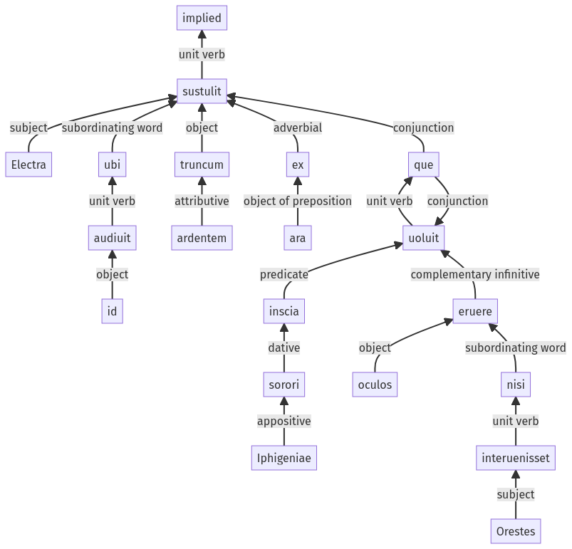

Hyginus, Fabuleer, 122a.3.1-122a.3.18a
122a.2.20-122a.2.30a | 122a.3.19-122a.3.48a
Sentence 1208
122a.3.1-122a.3.18a
Electra ubi audiuit id, truncum ardentem ex ara sustulit uoluit que inscia sorori Iphigeniae oculos eruere, nisi Orestes interuenisset.
1 Electra
2 ubi audiuit id
1 truncum ardentem ex ara sustulit
1 uoluit que inscia sorori Iphigeniae oculos eruere
2 nisi Orestes interuenisset
Electra ubi audiuit id, truncum ardentem ex ara sustulit uoluit que inscia sorori Iphigeniae oculos eruere, nisi Orestes interuenisset.
Highlighting:
- connecting words
- unit verb
- subject
- object
Color code:
- independent clause (level 1, transitive verb)
- subordinate clause (level 2, intransitive verb)
- subordinate clause (level 2, transitive verb)
- independent clause (level 1, intransitive verb)
